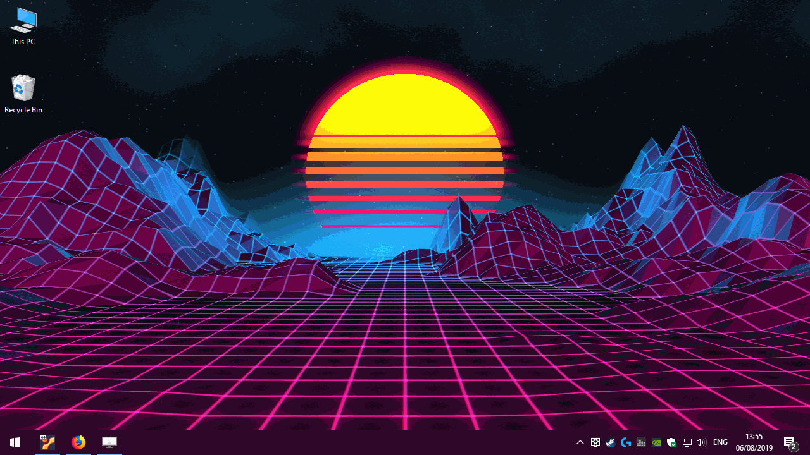

Коротко о разделе
Вы попали в раздел полезных программ сайта Cyberus, здесь вы найдёте их описание и ссылку на скачивание. Эти программы были единолично отобраны и протестированны нашей редакцией. Если же вы мне не доверяете, то мы оставили ссылку на официальный сайт производителя специально для вас :D
Чтобы далеко не идти, вот вам одна кнопка скачивания:


1) Ccleaner

Ну естественно это будет Ccleaner, что-то нормальное ищите ниже. Меню слева видишь? Сам делал
CCleaner — бесплатная программа, которая предоставляет пользователям простой в использовании инструмент для очистки и оптимизации операционных систем Windows. Утилита была создана британской фирмой Piriform Limited и написана на C++. Обычно новая версия дистрибутива выходит каждый месяц. На декабрь 2012 года с официального сайта программы было совершено более 1 миллиарда загрузок.
2) Wallpaper Engine
Вот это уже более полезная программа, это анимированные, и не только, обои. Правда она платная, но своих денег стоит. Наверное. Как вы думаете, почему все самые лучшие программы находятся в конце статьи? Заглушку под рекламу видите? Вот и ответ.
Wallpaper Engine — это приложение для Windows с сопутствующим приложением на Android, которое позволяет пользователям использовать и создавать анимированные и интерактивные обои. Он поддерживает использование видеофайлов, аудиофайлов, веб-страниц и некоторых 3D-приложений в качестве обоев. Данная программа платная и для скачивания доступна только в Steam.
3) OBS Studio

OBS нужен для захвата экрана под стримы и не только. Аппаратные аналоги конечно лучше, но они стоят денег, и это уже явно не программа.
Open Broadcaster Software (OBS) — свободная программа с открытым исходным кодом для записи видео и потокового вещания, разрабатываемая проектом OBS и сообществом независимых разработчиков.
4) ShareX

Нужна для создания скриншотов, записи экрана без звука, пересылка всего вышеупомянутого на множество платформ одновременно и простого фото-видео редактора.
ShareX — это бесплатная программа для создания скриншотов и скринкастов с открытым исходным кодом для Microsoft Windows. Исходный код проекта размещен на GitHub. Он также доступен в Microsoft Store и Steam.
5) Aida 64

По сути улучшенный диспетчер задач, но с фокусами. Хоть и является условно-бесплатной программой, но всё равно прекрасна. Специализация её бенчмарков это процессор, и, возможно, оперативная память.
AIDA64 — утилита FinalWire Ltd. для тестирования и идентификации компонентов персонального компьютера под управлением операционных систем Windows, предоставляющая детальные сведения об аппаратном и программном обеспечении. Является последовательницей утилиты Everest, принадлежащей с 2004 по 2010 года компании Lavalys, которая в свою очередь основана на AIDA32
6) MSI Afterburner

Программа для ручной настройки видеокарты, и не только. Переживать не стоит, худшее что вы сможете сделать с этой программой для своего компьютера, так это перезагрузить его.
MSI Afterburner — компьютерная программа для тонкой настройки и разгона видеокарт от NVIDIA и AMD. Программа позволяет отслеживать температуру и частоту графического ядра и памяти, а также управлять практически всеми параметрами видеокарты. Здесь можно найти настройки кулера: включить постоянную скорость вращения вентилятора или определить в процентах количество оборотов в зависимости от нагрузки.
7) Rivatuner Statistics Server (RTTS)

Программа для сбора статистики производительности всего компьютера, сама по себе способна вывести только количество FPS, обычно используется в связке с MSI Afterburner. Вместе с ней она способна выводить абсолютно любую информацию о любой части компьютера на экран поверх всех окон в реальном времени.
Да, у этой программы нет вики, а официальный сайт выглядит так, как будто я его за часик сверстал, да и тот на английском, так что более полной информации, чем в моём коментарии вы навряд ли найдёте. Или захотите искать.
8) Opera GX

Opera GX- первый в мире игровой браузер. Помимо того, что Opera GX сама по себе грамотно использует ресурсы пк, вы так же можете вручную устоновить лимиты используемой оперативной памяти, и регулировать доступную нагрузку на процессор, тем самым использовать браузер во время игры с минимальным влиянием на производительность. Так же есть функция ограничения пропускной способности сети, благодаря чему в сетевых играх у вас не будет задержек из-за фоновой работы браузера. Данная функция будет полезна...
Браузер огонь, сам пользуюсь и вам советую, с 4гб оперативной памяти и i3 первого поколения под Windows 7 работал без нареканий, а теперь из Wiki: Opera GX — это веб-браузер, разработанный норвежской компанией Opera Software специально для геймеров под операционные системы Microsoft Windows, MacOS, Android и iOS. Opera GX поддерживается 32-битной и 64-битной версиями Windows, а также macOS.
9) Notepad++

Простой редактор кода, позволяет работать с несколькими файлами одновременно. Да, VS Code удобнее, но во-первых Notepad++ удобнее при быстрой работе с группой файлов, раскиданных по разным концам жёсткого диска, а во вторых. (Если что, ссылка на скачивание ведёт на скачивание архива с Notepad++, и только под Windows x64. Если хотите установить его другим способом или под другую систему, идите на официальный сайт и выбирайте)
Notepad++ — свободный текстовый редактор с открытым исходным кодом для Windows с подсветкой синтаксиса, разметки, а также языков описания аппаратуры VHDL и Verilog. Базируется на компоненте Scintilla, написан на C++ с использованием STL, а также Windows API, и распространяется под лицензией GNU General Public License. Базовая функциональность программы может быть расширена как за счёт плагинов, так и сторонних модулей, таких как компиляторы и препроцессоры. Поддерживает открытие более 100 форматов.
10) MSI Center

MSi Center - это обьеденение функционала большинства полезных программ в одной (Aida 64, Cristal Disk Info, FurMark и многих других). Крайне полезная программа, но только при условии что материнская плата от MSI.
MSI Center и MSI Center Pro – эксклюзивное программное обеспечение, облегчающее взаимодействие с ноутбуком при запуске игровых и профессиональных приложений. Недавно в нем появились новые функции Smart Auto и Ambient Silent AI, работающие на базе модуля искусственного интеллекта MSI AI Engine.